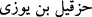

Mûsâ (a.s.)’dan sonra İsrâîloğulları’nın üçüncü halifesi olan Hazkîl (  )
adında bir peygamber, bu çürümüş cesedlerin yanına uğradı. Mûsâ (a.s.)’dan sonra
İsrâîloğulları’nın başına yönetici olarak geçenlerin birincisi Yûşâ b. Nûn; ikincisi
Kâlib b. Yuhannâ; üçüncüsü de Hazkîl idi. Hazkîl’e İbn Acûz da denilirdi. Çünkü
annesi ihtiyar bir kadın iken kısırlaştıktan sonra Allah’tan kendisine, bir erkek çocuk
vermesini istedi. Allah da ona Hazkîl’i verdi.
Hasan Basrî demiştir ki: O peygamber Zülkifl idi. Hazkîl, canını siper edip yetmiş
peygamberi ölümden kurtardığı için “Zülkifl” diye isimlendirilmiştir. O, yahûdîlerin
peygamberlerini öldürdüğü bir sırada, yetmiş peygamber arkadaşına: “Siz gidiniz, ben
kalayım. Eğer öldürülürsem; sadece benim öldürülmem, hepimizin öldürülmesinden
daha iyidir.” dedi. Onlar gittiler. Yahûdîler gelip Zülkifl’e diğer yetmiş peygamberin
nerede olduklarını sorduklarında o, onların gittiklerini ve nerede olduklarını
bilmediğini söyledi. Allah Teâlâ da fazl ve keremiyle Zülkifl’i yahûdîlerden korudu.
İşte bahsettiğimiz bu Hazkîl peygamber vâdîde bulunan ölülerin yanına uğradı.
Görülen şeyin çokluğu sebebiyle orada durup hayretler içinde tefekkür etmeye başladı.
Bu sırada Allah Teâlâ ona vahyetti ki:
“Sana bir âyet, bir mûcize göstermemi ister misin?” O da: “Evet”, dedi. Bunun
üzerine Cenâb-ı Hakk:
“Ey kemikler! Allah sizin toplanıp bir araya gelmenizi emrediyor” diye nidâ et, dedi.
O da böylece nidâ etti de, baştan sona kadar vâdîde bulunan bütün kemikler bir araya
toplanıp bir kısmı bir kısmına bitişerek etsiz ve kansız, kemikten cesedler haline
geldiler.
Sonra Allah Teâlâ ona tekrar şöyle nida etmesini vahiy buyurdu:
“Ey ruhlar! Allah size kalkıp kıyam etmenizi emrediyor.” O da bu şekilde nidâ edince
kalktılar ve:
“Sübhânekellahümme ve bihamdike lâ ilâhe illâ ente” diyerek yeniden hayata
döndüler. Onlarda, cesedleri çürüdüğü zaman hasıl olan kokudan bir iz kaldı.
Bu kıssanın anlatılmasından maksad; müslümanları cihada, şehîd olma yollarına
başvurmaya teşvîk; teslim ve tevekkül ehli olmaya tergîbdir. Ölüm muhakkak gelecektir.
Ondan kaçış mümkün değildir. Böyle olduğuna göre evlâ olan bunun, Allah yolunda
olmasıdır.
“Şüphesiz Allah, insanlara karşı ikrâm sâhibidir.” Âyetteki “insanlar” (nâs)’dan
maksad; ya kıssaları anlatılan kimselerdir. Allah, fazl ve kereminden, başlarına gelen
hâdiselerden ibret alarak saâdet-i uzmâya kavuşmaları için onları tekrar diriltmiştir.
Veya kıssayı işitenlerdir; Hak Teâlâ, basîret gözlerini açıp olaylardan ibret almalarını
sağlamak sûretiyle onlara lütuf ve ihsanda bulunmuştur. “Fakat insanların çoğu”;
bazısı aczi sebebiyle, bazısı da inkâr yüzünden, Allah’ın kendilerine olan fazlına
gerektiği şekilde “şükretmezler.”